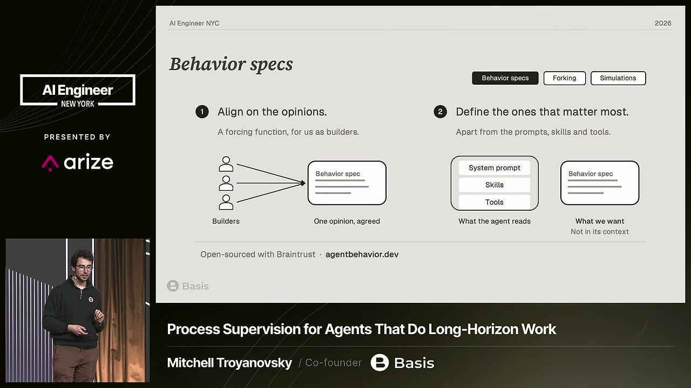

essencial do dia: Specs de comportamento, fork e simulação com subagentes dão um jeito de avaliar trajetórias quando não há gabarito.
Agentes opinativos e specs de comportamento em produção
Why AI Makes You 100x Faster but Not Your Company
Empresa só ganha com agente que seja simples e confiável, e isso vem de opinar sobre o comportamento e supervisionar trajetórias, não só resultados.
Depois deste talk você consegue escrever uma spec de comportamento para um agente e usá-la como rubrica para checar trajetórias sem gabarito
Em 3 frases
Mitchell Troyanovsky, da Basis, diz que a produtividade individual com IA não chega às empresas porque o agente joga a complexidade e a definição do processo para cada usuário.
A saída é um agente opinativo, que faz a tarefa sempre do mesmo jeito, com comportamentos descritos em specs que servem de rubrica para checar trajetórias sem gabarito.
Para descobrir por que o agente decidiu mal, ele usa fork (copiar o agente logo após a decisão) e simulações com subagentes, que são mais baratas e rápidas.
Antes de ler
- Context engineering engenharia de contexto analogia abaixo
- Eval avaliação analogia no glossário
- Rubric rubrica de critérios de avaliação analogia no glossário
- Ground truth gabarito rotulado por especialistas analogia no glossário
- Sistema determinístico deterministic system (mesma entrada, mesma saída) analogia no glossário
- Progressive disclosure revelar ferramentas ao agente só quando necessário analogia no glossário
Empresas escalam com processo, não com determinismo
Quem dirige uma firma não sabe o dia a dia de quem está na base, e confia porque há processos que levam a bons resultados mesmo com pessoas não determinísticas. Agentes soltos para o usuário configurar quebram isso, pois cada pessoa inventa seu jeito de trabalhar.
 (ampliar imagem)
(ampliar imagem)
Dois buracos: competência e processo
Agentes de estilo coding empurram a complexidade ao usuário, que precisa cuidar de skills, memórias e saber quando usar o agente. Além disso, o processo passa a ser decidido por cada funcionário, quando deveria vir da liderança. A resposta é um agente simples de usar e confiável.
03:42 Os dois problemas que travam a adoção de agentes na empresa.
Ter opinião vale mais que acertar sempre
Ler um PDF pode ser feito com VLM, OCR em Python, provedores de OCR ou votação de muitos modelos. Sem opinião, o agente varia o método e a confiabilidade cai. Opiniões vêm de expertise, como ler a fonte primária em tarefas fiscais, e envolvem trocas como latência contra precisão.
06:51 Sem uma opinião escolhida, o agente pode seguir qualquer um desses caminhos.
Mais 2 ideias deste talk
Spec de comportamento como rubrica
Evals de resultado têm poucos casos, enquanto a produção tem centenas de milhares de situações. A spec de comportamento registra só as opiniões que mais importam. Serve para alinhar o time e para checar, em qualquer trajetória, se a situação surgiu e se o agente agiu como esperado.


(ampliar imagem)Fork e simulação com subagente para achar a causa
Com fork, você copia o agente logo após a decisão ruim e pergunta por que decidiu assim, ou altera o contexto e vê se muda. A simulação pede a um agente de código que crie um subagente imitando o de produção, com o mesmo prompt e skills. É pior que o fork, mas mais barata e rápida.
15:09 Simulação permite iterar no contexto sem recriar o ambiente inteiro.
Context engineering (engenharia de contexto). Context engineering é como preparar a mesa de um cozinheiro novo antes do turno, escolhendo quais receitas, ingredientes e bilhetes ficam à vista, porque ele vai cozinhar com base no que estiver ali.
- Um agente de IA decide o que fazer lendo um conjunto de textos que recebe a cada passo. Esse conjunto se chama contexto.
- Context engineering (engenharia de contexto) é o trabalho de escolher, escrever e organizar tudo o que entra nesse contexto, além do prompt que você digita.
- O contexto junta várias peças: o system prompt (instrução de sistema), as descrições das ferramentas, as skills reveladas aos poucos (progressive disclosure) e os resultados de cada passo anterior.
- O palestrante sugere tratar esse contexto como dados de treino em tempo de execução. O modelo não aprende de verdade, mas age conforme o que lê, então cada token conta.
- Por isso um comportamento raramente cabe em um só parágrafo. Ele nasce da soma de todas as peças, e mudar uma delas pode alterar a decisão do agente.
Ajuda saber antes: Prompt, Token, Agente de IA, LLM
O talk é de um fundador falando do próprio produto, e não mostra dados que comparem agentes opinativos com agentes livres. A afirmação de que opiniões como ler a fonte primária melhoram a precisão é dada como óbvia, sem medição. A generalização por checagem de comportamento é admitida como imperfeita. Os exemplos vêm de contabilidade, e o fork na nuvem é descrito como difícil sem detalhar a solução.
Teste você mesmo
Responda de cabeça antes de abrir. Lembrar com esforço é o que fixa.
- lembrar Quais são os dois problemas dos agentes de estilo coding apontados no talk?
Ver resposta
A lacuna de competência, pois o usuário precisa gerenciar skills e memórias, e a lacuna de processo, pois cada usuário define como o agente trabalha, contra a lógica de processos vindos da liderança.
- aplicar Como você usaria uma spec de comportamento em um agente de suporte ao cliente que não tem gabarito para cada conversa?
Ver resposta
Escreva as poucas opiniões que mais importam, por exemplo escalar para humano diante de pedido de reembolso. Depois use cada uma como rubrica nos traces: a situação ocorreu e o agente agiu como esperado?
- criticar Que limite existe na tese de que checar comportamentos indica que o agente generaliza para a produção?
Ver resposta
O próprio palestrante admite que não é prova. Se a opinião estiver errada, o agente cumpre o comportamento e falha mesmo assim. O talk também não traz dados comparando essa abordagem com evals de resultado, e o autor vende o produto.
Simular seu agente com um subagente
Você precisa de: Claude Code ou outro agente de código e o prompt de um agente seu (pode ser de teste)
- Escreva uma spec de comportamento de duas frases, com a situação e a ação esperada.
- Peça ao agente de código que crie um subagente que finge ser o seu agente, com o mesmo prompt de sistema, e que não trapaceie.
- Descreva 5 situações em que o comportamento deveria aparecer e pergunte ao subagente o que faria em cada uma.
- Altere o prompt, repita as 5 situações e compare as respostas.
Deu certo se: Você vê em quantas das 5 situações o comportamento mudou depois do ajuste e consegue apontar qual trecho do prompt causou a diferença.
O que fazer com isso
- Escolha um comportamento crítico do seu agente e escreva em duas frases quando ele se aplica e o que o agente deve fazer.
- Rode esse comportamento como rubrica sobre 20 traces reais e conte em quantos a situação apareceu e em quantos o agente agiu como esperado.
- Quando uma trajetória falhar, peça a um agente de código que crie um subagente com o mesmo prompt e skills e teste mudanças de contexto.
Conversa com outros talks
- Seis pilares de um harness para agentes em produção · 7 out · em comum: Agent harness, Context engineering, Eval
- Agentes que escrevem as próprias ferramentas · 4 out · em comum: Agent harness, Eval, Subagente
- MCP e CLI sem encher o contexto do agente · 2 out · em comum: Eval, Harness, Subagente